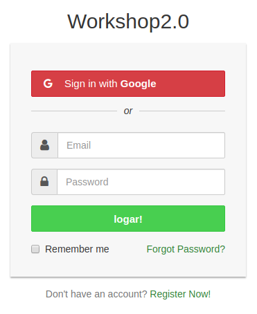

Workshop 2.0 BootCamp
Material por 8 horas Imersão Prática com Golang Este é um material em Golang que será apresentado "cara a cara" em uma oficina "de mãos dadas" que será realizada em 8 horas.
Prévia Go
Todo o conteúdo visa o nível básico do aluno, muitos exemplos práticos foram feitos com detalhes riqueza para tornar a vida mais fácil do que está iniciando. Se você sabe pouco e quase nada de programação não será problema todo manual foi feito para nivelar começando a avançado. Todas as dificuldades que tive quando comecei a tentar contemplar esse material. Vamos tentar melhorar o material o tempo todo para que possamos ter uma referência quando se trata de ir.
Espero que todos gostem e possam servir de base para aprender e ajudar vários Gophers possíveis.
O conteúdo e as referências usadas são do Site Oficial de Golang e do material que está sendo desenvolvido, que é uma compilação de toda a linguagem de Golang e pode ser conferida aqui em jeffotoni / Compilation.
Algumas apresentações que fiz podem ser vistas aqui Apresentações.
Há milhares de referências hoje em relação a Golang, vamos começar no começo e não poderíamos parar de falar sobre a Golang Tour. Bem, esse site aqui Play Golang ou Play no Go Space, podemos rodar o Golang online.
Temos um link muito interessante que pudemos pesquisar por pacotes escritos em Golang. Confira este link: Go Doc
Nós temos este link que nos apresenta como um manual todas as bibliotecas desenvolvidas no Golang Dev Docs
Aqui encontramos um incrível go, há várias listas como é, e às vezes é legal verificar algumas bibliotecas para nos ajudar com alguns projetos. awesome-go
Logo abaixo alguns canais que participo e posso me encontrar online.
Telegram:
- gobr
- gobh
Overview
Go é uma linguagem poderosa quando se trata de competição e alto desempenho, com uma arquitetura limpa e eficiente. Ela cresce ano após ano e todos os dias as comunidades crescem ainda mais.
Alguns paradigmas foram quebrados para torná-lo uma linguagem de alto desempenho, onde a competição é um dos seus pontos fortes. O Go facilita a criação de programas que aproveitam ao máximo as máquinas multicore e em rede, enquanto o novo sistema de tipos permite que você crie programas flexíveis e modulares.
É uma linguagem rápida e estaticamente compilada que se parece com uma linguagem interpretada dinamicamente. Este recurso Golang se torna uma linguagem única como o assunto é web.
Go é uma linguagem de programação compilada, competitiva, forte e estaticamente tipada. É uma linguagem de "Uso Geral" que pode ser usada para resolver vários problemas e em diferentes áreas. Problemas envolvendo concorrência, aplicações web, aplicações de alto desempenho, desenvolvimento de APIs, soquetes de comunicação etc ... É onde a linguagem está se tornando cada vez mais proeminente no mercado e nas comunidades.
Introdução conteúdos
Go está na versão 1.12.7 e caminhando para versão 2.0, todo ciclo de desenvolvimento de seu core respeita o arcaboço e designer do que foi proposto no inicio do surgimento da linguagem. O objetivo centrarl sobre Go é torna-lá cada vez mais produtiva e deixar a linguagem ainda mais simples para os que forem desenvolver em Go.
Durante o processo, a equipe de desenvolvimento Go apresentou quatro maneiras principais de simplificar a experiência geral de escrever programas Go: Remodelando, Redefinindo, Removendo e Restringindo chamado os quatro R's da simplificações.
Neste cenário percebe-se claramente que no designer de Go "Menos é exponencialmente Mais", e nasceu o termo "Jeito Go de fazer as coisas".
Aqui um post completo "Simplificando a Complexidade. O Inicio"
Espero que todos gostem e possam servir de base para aprender e ajudar vários Gophers possíveis.
O conteúdo e as referências usadas são do Site Oficial de Golang e grande parte é feita sobre a ótica prática do autor.
Fundamentos da Linguagem
1 - Compilada e estática
$ go build
$ go build -ldflags="-s -w" hello.goCompilando para Lambda
$ GOOS=linux GOARCH=amd64 go build -o lambda lambda.goCompilando para WebAssembly
$ GOARCH=wasm GOOS=js go build -o test.wasm hello.goCompilando e gerando um .o file, e gera o seu assembly
$ GOOS=linux GOARCH=amd64 go tool compile -S hello.go
$ go tool compile -S hello.go > hello.S
$ go build -gcflags -S hello.goGerando o dump do assembly
$ go tool objdump hello > ref-assemblyIsso está no código para quando compilamos para diferenciar e compilar somente aqueles que contêm essas tags. Ao compilar basta informar a tag que você colocou no seu código.
// +build !windows
$ go build -o main mainBuildmode
$ go help buildmode -buildmode=plugin
plugin/randseed.so
package main
import (
"crypto/md5"
"fmt"
"io"
"math/rand"
"strconv"
"time"
)
func RandSeed() string {
rand.Seed(time.Now().Unix())
return Md5(strconv.Itoa(rand.Intn(1000000) + rand.Intn(100000)))
}
func Md5(text string) string {
h := md5.New()
io.WriteString(h, text)
return (fmt.Sprintf("%x", h.Sum(nil)))
}
$ go build -buildmode=plugin -o plugin/randseed.so .plugin/randseed.go
package main
import "plugin"
import "io"
import "strings"
import "os"
func main() {
p, err := plugin.Open("../plugin/randseed.so")
if err != nil {
panic(err)
}
f, err := p.Lookup("RandSeed")
if err != nil {
panic(err)
}
randstr := f.(func() string)())
io.Copy(os.Stdout, strings.NewReader(randstr))
}
$ go run main.go Compilando estática em C
#include
#include
int main(void)
{
int i;
printf("Gerando 10 valores aleatorios:\n\n");
for (i = 0; i < 10; i++)
{
/* gerando valores aleatórios entre zero e 100 */
printf("%d ", rand() % 100);
}
return 0;
}
$ gcc -static -o rand rand.c -lmVariáveis ambiente importantes
$ GO111MODULE=on GOMAXPROCS=NUMERO-CPU go build 2 - Gc (Garbage Collector)
https://blog.golang.org/ismmkeynotepackage main
import "fmt"
import "runtime"
import "sync"
func main() {
lotsOf := make([]*int, 15e8)
runtime.GC()
numWorkers := runtime.NumCPU()
var wg sync.WaitGroup
for i := 0; i < numWorkers; i++ {
wg.Add(1)
go func() {
defer wg.Done()
work()
}()
}
wg.Wait()
runtime.KeepAlive(lotsOf)
}3 - Paradigma Concorrente
Canais são como filas que fornece acesso sincronizado automático entre goroutines. Esse entendimento nos levará a escrever códigos concorrentes.
O importante é sempre focar como eles se comportam. Um canal permite que uma goroutine sinalize outra goroutine sobre um determinado evento. A sinalização está no centro de tudo que você deve fazer com os canais. Pensar nos canais como um mecanismo de sinalização permitirá que você escreva um código melhor com um comportamento bem definido e mais preciso.
Para entender como funciona a sinalização, precisamos entender seus três atributos:
- Garantia de entrega
- Estado
- Com ou sem dados
Esses três atributos trabalham juntos para criar uma filosofia de design em torno da sinalização.
Garantia de entrega

A garantia de entrega é baseada em uma pergunta: "Preciso de uma garantia de que o sinal enviado por uma goroutine específica foi recebido?"
func main() {
ch := make(chan string)
go func() {
p := <-ch // Receive
}()
ch <- "goworkshop" // Send
}Estado

O comportamento de um canal é diretamente influenciado pelo seu estado atual. O estado de um canal pode ser nulo, aberto ou fechado.
// ** nil channel
// Um chan é um estado com nil quando ele é declardo com zero value
var ch chan string
// Um chan pode ser alterado com nil e torna um estado de forma explicita
ch = nil
// ** open channel
// Um chan é de estado aberto quando é usado built-in function make.
ch := make(chan string)
// ** closed channel
// Um chan é fechado o estado quando é usado built-in function close.
close(ch)Quando um canal está em um estado nulo , qualquer tentativa de envio ou recebimento no canal será bloqueada. Quando um canal está em estado aberto , os sinais podem ser enviados e recebidos. Quando um canal é colocado em um estado fechado , os sinais não podem mais ser enviados, mas ainda é possível receber sinais.
Esses estados fornecerão os diferentes comportamentos que você precisa para as diferentes situações que encontrar. Ao combinar Estado com Garantia de Entrega , você pode começar a analisar os custos / benefícios que você está incorrendo como resultado de suas escolhas de projeto. Em muitos casos, você também será capaz de identificar rapidamente os bugs apenas lendo o código, porque você entende como o canal vai se comportar.
package main
import "fmt"
func main() {
ch := make(chan string,10)
ch <- "goworkshop 1" // Send
ch <- "goworkshop 2" // Send
ch <- "goworkshop 3" // Send
fmt.Println(<-ch) // Receive
fmt.Println(<-ch) // Receive
fmt.Println(<-ch) // Receive
}
package main
import "fmt"
import "time"
var stream = make(chan int)
var fin = make(chan bool)
func produce() {
for i := 0; i < 10; i++ {
fmt.Println("sending")
stream <- i
fmt.Println("sent")
}
fmt.Println("No closing channel")
//close(stream)
fin <- true
}
func consume() {
for {
data := <-stream
fmt.Println("Consumer: ", data)
time.Sleep(500 * time.Millisecond)
}
}
func main() {
go consume()
go produce()
<-fin
fmt.Println("After calling DONE")
}Sinalização com dados
Quando você vai sinalizar com dados, existem três opções de configuração de canal que você pode escolher dependendo do tipo de garantia que você precisa.
Figura 3: sinalização com dados

As três opções de canal são: sem buffer , Buffered> 1 ou Buffered = 1.
O tamanho do buffer nunca deve ser um número aleatório. Ele deve sempre ser calculado para alguma restrição bem definida. Não há infinito na computação, tudo deve ter alguma restrição bem definida, seja tempo ou espaço.
4 - Tipagem estática
Go é uma linguagem de programação compilada e pertence a família da linguagem C. Contudo, seu tempo de compilação é muito mais rápido do que outras linguagens da mesma família. Ela possui apenas 25 palavras-chave (palavras reservadas). Vamos dar uma olhada nessas palavras antes de começar.
| break | default | func | interface | select |
| case | defer | go | map | struct |
| chan | else | goto | package | switch |
| const | fallthrough | if | range | type |
| continue | for | import | return | var |
package main
import "fmt"
type Produto struct {
Id int64
Nome string
Preco float64
}
func main() {
type MyString string
const nome string = "@jeffotoni"
var p Produto
var vars MyString
var t string
var a int
vars = MyString(nome)
t = "ola"
a = 100
p.Id = 1000
p.Nome = "TV LG"
p.Preco = 2500.00
fmt.Println(t)
fmt.Println(a)
fmt.Println(nome)
fmt.Println(vars)
fmt.Println(p)
}
5 - Semântica é clara
package main
import "fmt"
func main() {
fmt.Println("Workshop2.0")
}6 - Sintaxe é limpa
package main
import "fmt"
func main() {
io.Copy(os.Stdout, strings.NewReader(f.(func() string)()))
}7 - É de uso Geral
package main
/*
#include
#include
void GoPrint(char* s) {
printf("%s\n", s);
}
*/
import "C"
func main() {
C.GoPrint(C.CString("Workshop 2.0\n"))
} $ go run main.go8 - Plataformas: Windows, Linux, Mac e FreeBSD
Instalação
Introdução à Instalação
Em golang a instalação é muito simples e prática, para Linux, Mac e Windows.
Basta copiar os arquivos para o diretório correto para cada sistema operacional e exportar os caminhos para o ambiente e solicitar, golang está instalado.
Vamos dar uma olhada em como fazemos isso.
Instalação
Vamos baixar o arquivo, descompactá-lo e instalá-lo em /usr/local/go, se tivermos golang já instalado na máquina teremos que remover o existente para deixar nossa instalação como única. Vamos criar nosso diretório em nosso espaço de trabalho e testar para ver se tudo correu bem.
Linux
$ sudo rm -rf /usr/local/go
$ wget https://dl.google.com/go/go1.11.5.linux-amd64.tar.gz
$ sudo tar -C /usr/local -xzf go$VERSION.$OS-$ARCH.tar.gz$GOPATH
$GOPATH é o golang em seu $HOME, isso é necessário para que seus projetos usem o pkg e construam corretamente. Isso era obrigatório para todas as versões anteriores à versão 1.11. O legal é que a partir de agora não teremos que criar projetos no $GOPATH, podemos criar em qualquer outro diretório que não esteja no $GOPATH.
Aqui está o link para a proposta de versão proposta: Módulos Go versionados ou Go 1.11 Modules
Vamos detalhar como trabalhar com o go mod, foi uma das melhores experiências que tive para projetos de versionamento usando Golang.
Vamos configurar nosso ambiente para rodar o Go. Adicione /usr/local/go/bin à variável de ambiente PATH. Você pode fazer isso adicionando esta linha ao seu /etc/profile (para uma instalação em todo o sistema) ou $HOME/.profile.
$ export PATH=$PATH:/usr/local/go/binNota: as alterações feitas em um arquivo de perfil podem não se aplicar até a próxima vez que você fizer login no seu computador. Para aplicar as alterações imediatamente, basta executar os comandos do shell diretamente ou executá-los a partir do perfil usando um comando como o source $HOME/.profile.
$ echo "export GOPATH=$HOME/go" >> $HOME/.profile
$ echo "export PATH=$PATH:/usr/local/go/bin" >> $HOME/.profile
$ echo "export PATH=$PATH:$GOPATH/bin" >> $HOME/.profileTeste nossa instalação
Vamos executar a versão para ver se tudo está correto.
$ go version
$ go version go1.11.5 linux/amd64Verifique se o Go está instalado corretamente configurando um espaço de trabalho e construindo um programa simples, da seguinte maneira.
Crie seu diretório de área de trabalho, $HOME/go. (Se você quiser usar um diretório diferente, precisará definir a variável de ambiente $GOPATH.)
Em seguida, faça o diretório src/hello dentro de sua área de trabalho e, nesse diretório, crie um arquivo chamado hello.go que se pareça com:
Workspace
O espaço de trabalho é o nosso local de trabalho, onde organizaremos nossos diretórios com nossos projetos. Como mostrado acima, até o Go versão 1.11 fomos forçados a fazer tudo sob o Espaço de Trabalho. $GOPATH Down Projects.
$ export GOPATH=$HOME/go
$ mkdir $HOME/go
$ mkdir $HOME/go/src
$ mkdir $HOME/go/src/hello
$ vim $HOME/go/src/hello/hello.go$GOPATH/
|-src
|-hello
|-hello.goProjeto de Exemplo
$ export GOPATH=$HOME/go
$ mkdir $HOME/go/src/project1
$ mkdir $HOME/go/src/project1/my-pkg
$ mkdir $HOME/go/src/project1/my-cmd
$ mkdir $HOME/go/src/project1/my-vendor
$ mkdir $HOME/go/src/project1/my-logs
$ mkdir $HOME/go/src/project1/my-models
$ mkdir $HOME/go/src/project1/my-repo
$ mkdir $HOME/go/src/project1/my-handlerProjeto de Exemplo
$GOPATH/
|-src
|-github.com/user/project1/
|-cmd (do project1)
|-main.go
|-vendor
|-logs
|-models
|-repo
|-handler
|-github.com/user/project2/
....
....A variável de ambiente $GOPATH informa a ferramenta Go onde sua área de trabalho está localizada.
$ go get github.com/user/project1O comando go get recupera repositórios de origem da Internet e os coloca em sua área de trabalho. Os caminhos do pacote são importantes para a ferramenta Ir. Usar "github.com/..." significa que a ferramenta sabe como buscar seu repositório.
No cenário acima, tudo teria que ficar em nosso $ GOPATH para que nossos projetos funcionassem corretamente.
Fora do $GOPATH
Agora podemos fazer nossos projetos sem estar em $GOPATH, podemos, por exemplo, fazê-lo em qualquer diretório.
Projeto Fora do GOPATH
$ export GOPATH=$HOME/go
$ mkdir $HOME/2019/project1
$ mkdir $HOME/2019/project1/my-pkg
$ mkdir $HOME/2019/project1/my-cmd
$ mkdir $HOME/2019/project1/my-logs
$ mkdir $HOME/2019/project1/my-models
$ mkdir $HOME/2019/project1/my-repo
$ mkdir $HOME/2019/project1/my-handler$HOME/
|-2019
|-github.com/user/project1/
|-cmd
|-main.go
|-vendor
|-logs
|-models
|-repo
|-handlerPodemos colocar nosso projeto em qualquer diretório agora.
$HOME/
|-any-directory
|-github.com/user/project1/
|-cmd
|-main.go
|-vendor
|-logs
|-models
|-repo
|-handlerPara o cenário acima, teremos que usar o go mod em nosso projeto para que todos os pacotes externos possam funcionar corretamente, assim poderemos gerenciá-los corretamente e versão. Mais informações podem ser encontradas aqui: Wiki Go Modules
Exemplo prático de como você irá proceder:
$ go mod init github.com/user/project1Instalação Docker
Se não quisermos instalar diretamente em nosso sistema operacional golang, podemos instalá-lo em um contêiner docker.
Podemos carregar um contêiner docker com o idioma instalado e compilar e executar nossos programas a partir desse contêiner.
Vamos verificar como podemos fazer isso abaixo.
Mais informações e detalhes você pode visitar este link: hub.docker
Instalação Docker para Golang
$ docker pull golangCompile seu aplicativo dentro do contêiner Docker
Pode haver ocasiões em que não é apropriado executar seu aplicativo em um contêiner. Para compilar, mas não executar seu aplicativo dentro da instância do Docker, você pode escrever algo como:
$ docker run --rm -v "$PWD":/usr/src/myapp -w /usr/src/myapp golang:1.11.5 go build -vIsso adicionará seu diretório atual como um volume ao contêiner, configurará o diretório de trabalho para o volume e executará o comando go build, que informará para compilar o projeto no diretório de trabalho e exibir o executável em myapp. Como alternativa, se você tiver um Makefile, poderá executar o comando make dentro do contêiner.
$ docker run --rm -v "$PWD":/usr/src/myapp -w /usr/src/myapp golang:1.11.5 makeFaça a compilação cruzada do seu aplicativo dentro do contêiner do Docker
Se você precisar compilar seu aplicativo para uma plataforma diferente de linux/amd64 (como Windows/386):
$ docker run --rm -v "$PWD":/usr/src/myapp -w /usr/src/myapp -e GOOS=windows \
-e GOARCH=386 golang:1.11.5 go build -vExemplo main.go
Vamos fazer nosso programa de testes, vamos chamar isso de main.go
package main
import "fmt"
func main(){
fmt.Println("Meu primeiro programa sendo compilado por um contêiner docker!")
}Agora vamos rodar um programa para ver se funciona corretamente.
$ docker run --rm -v "$PWD":/usr/src/main -w /usr/src/main golang:1.11.5 go run main.goSaída:
Meu primeiro programa sendo compilado por um contêiner docker!Verifique a versão:
$ docker run --rm -v "$PWD":/usr/src/main -w /usr/src/main golang:1.11.5 go versionSaída:
go version go1.11.5 linux/amd64Introdução Golang
Go é uma linguagem de propósito geral projetada com a programação de sistemas em mente. É fortemente tipado e colecionado de lixo e tem suporte explícito para programação concorrente. Os programas são construídos a partir de pacotes, cujas propriedades permitem o gerenciamento eficiente de dependências.
A gramática é compacta e regular, permitindo fácil análise por ferramentas automáticas, como ambientes de desenvolvimento integrados.
Linguagem Golang
Palavras-chave
As seguintes palavras-chave são reservadas e não podem ser usadas como identificadores.
| break | default | func | interface | select |
| case | defer | go | map | struct |
| chan | else | goto | package | switch |
| const | fallthrough | if | range | type |
| continue | for | import | return | var |
Operadores e Pontuação
As sequências de caracteres a seguir representam operadores (incluindo operadores de atribuição) e pontuação:
| + | & | += | &= | && | == | != | ( | ) |
| - | | | -= | |= | || | < | <= | [ | ] |
| * | ^ | *= | ^= | <- | > | >= | { | } |
| / | << | /= | <<= | ++ | = | := | , | ; |
| % | >> | %= | >>= | -- | ! | ... | . | : |
| &^ | &^= |
Println / Print
Vamos aprender como enviar dados para a tela, que é realmente a saída padrão stdout, veremos mais adiante com detalhes sobre stdout e stdin.
Vamos conhecer print, println e fmt.Println
As implementações atuais fornecem várias funções internas úteis durante o bootstrapping. Essas funções são documentadas para integridade, mas não garantem a permanência no idioma. Eles não retornam um resultado.
Restrição de implementação: print e println não precisam aceitar tipos arbitrários de argumentos, mas a impressão de tipos booleanos, numéricos e de string deve ser suportada.
println é uma função embutida (no tempo de execução) que pode eventualmente ser removida, enquanto o pacote fmt está na biblioteca padrão, que persistirá.
Function Behavior
print prints all arguments; formatting of arguments is implementation-specific
println like print but prints spaces between arguments and a newline at the endUsando print:
// test print
package main
func main() {
print("debugando meu sistema com print")
}Saída:
debugando meu sistema com printUsando println:
// test println
package main
func main() {
println("debugando meu sistema com println")
}Saída:
debugando meu sistema com printlnUsando fmt.Println:
package main
import "fmt"
func main() {
fmt.Println("debugando meu sistema com fmt.Println")
}Saída:
debugando meu sistema com fmt.PrintlnO objetivo de iniciar e executar o comando print, println ou fmt.Println é nos ajudar com os testes que faremos a partir de agora em todas as etapas do nosso aprendizado Go.
Bufio NewWriter
bufio.WriterFazer muitas gravações pequenas pode prejudicar o desempenho. Cada gravação é, em última instância, um syscall e se fazer com freqüência pode sobrecarregar a CPU. Dispositivos como discos funcionam melhor lidando com dados alinhados ao bloco. Para evitar a sobrecarga de muitas pequenas operações de gravação, o Golang é fornecido com o bufio.Writer. Os dados, em vez de ir diretamente para o destino (implementando a interface io.Writer) são acumulados primeiro dentro do buffer e enviados quando o buffer está cheio:
Vamos visualizar como o buffer funciona com nove gravações (um caractere cada) quando o buffer tem espaço para quatro caracteres:
producer buffer destination (io.Writer)
a -----> a
b -----> ab
c -----> abc
d -----> abcd
e -----> e ------> abcd
f -----> ef abcd
g -----> efg abcd
h -----> efgh abcd
i -----> i ------> abcdefghConfira o exemplo abaixo
package main
import (
"bufio"
"os"
)
// creating the write object pointer
// so that we can receive value in every
// scope of our program
var writer *bufio.Writer
func main() {
// All screen output will be redirected
// to bufio.NewWriter
writer = bufio.NewWriter(os.Stdout)
s := "How many stars does Orion have?\n"
var b byte = 'H'
writer.WriteString(s)
writer.WriteByte(b)
writer.WriteString("\n")
// when all the functions finishes it closes
// the buffer and sends to the.Stdout
defer writer.Flush()
}Saída:
How many stars does Orion have?
HFunc Main
package main
import "fmt"
func main() {
fmt.Printf("hello, Gophers\n")
}Em seguida, vamos dar build com o go tool:
$ cd $HOME/go/src/hello
$ go buildOu podemos compilar assim:
$ cd $HOME/go/src/hello
$ go build -o hello hello.goO comando acima irá construir um executável chamado hello no diretório ao lado do seu código-fonte. Execute para ver a saudação:
$ ./hello
hello, GophersVerifique também o comando run com o go:
$ go run hello.go
hello, GophersSe você vir a mensagem "hello, Gophers", sua instalação do Go está funcionando.
Você pode executar go install para instalar o binário no diretório bin do seu workspace ou go clean -i para removê-lo.
Exemplo: go install
$ pwd
$ $HOME/go/src/hello
$ cd $HOME/go/src/hello
$ go install
$ ls -lhs $HOME/go/bin
-rwxrwxr-x 1 user user 2,9M nov 8 03:11 helloExample: go clean -i
$ go clean -i
$ ls -lhs $HOME/go/binComandos Go
Introdução Comandos Go
Em golang, temos um arsenal para nos ajudar quando se trata de compilar, testar, documentar, gerenciar perfis etc.
bug iniciar um relatório de bug
build compilar pacotes e dependências
clean remover arquivos de objetos e arquivos em cache
doc mostrar documentação para pacote ou símbolo
env imprimir informações do ambiente Go
fix atualizar pacotes para usar novas APIs
fmt gofmt (reformatar) fontes de pacotes
generate gerar arquivos Go processando a origem
get baixar e instalar pacotes e dependências
install compilar e instalar pacotes e dependências
list lista de pacotes ou módulos
mod manutenção de módulo
run compilar e executar o programa Go
test testar pacotes
tool executar ferramenta especifica do Go
version mostrar versão Go
vet relatar erros prováveis em pacotesUse "go help" para mais informações sobre um comando.
Go Run
Uso:
go run [build flags] [-exec xprog] package [arguments...]Executar compila e executa o pacote principal chamado Go. Normalmente, o pacote é especificado como uma lista de arquivos de origem .go, mas também pode ser um caminho de importação, um caminho do sistema de arquivos ou um padrão que corresponda a um único pacote conhecido, como em "go run ." ou "go run my/cmd".
Por padrão, 'go run' executa o binário compilado diretamente: 'a.out arguments ...'. Se o flag -exec é dado, 'go run' invoca o binário usando xprog:
Se o flag -exec não for fornecido, GOOS ou GOARCH for diferente do padrão do sistema e um programa chamado go_$GOOS_$GOARCH_exec puder ser localizado no caminho de procura atual, 'go run' chamará o binário usando esse programa, por exemplo 'go_nacl_386_exec a.out arguments ...'. Isso permite a execução de programas compilados quando um simulador ou outro método de execução estiver disponível.
O status de saída de Run não é o status de saída do binário compilado.
Para mais informações sobre os sinalizadores de construção, consulte 'go help build'. Para mais informações sobre como especificar pacotes, consulte 'go help packages'.
Veja abaixo um exemplo:
// testando println
package main
func main() {
println("Debugando meu sistema com println")
}Go run:
go run println.goSaída:
Debugando meu sistema com printlnGo Build
Build compila os pacotes nomeados pelos caminhos de importação, junto com suas dependências, mas não instala os resultados.
Ao compilar pacotes, o build ignora os arquivos que terminam em '_test.go'.
O flag -o, permitido somente ao compilar um único pacote, força a compilação a gravar o executável ou objeto resultante no arquivo de saída nomeado, em vez do comportamento padrão descrito nos dois últimos parágrafos.
O flag -i instala os pacotes que são dependências do destino.
$ go build [-o output] [-i] [build flags] [packages]Veja um exemplo:
package main
import "fmt"
func main() {
fmt.Println("Go Workshop 2.0")
}Saída:
Go Workshop 2.0Compilação normal
go build -o hello hello.goSaída:
$ ls -lh
-rwxrwxr-x 1 root root **1,9M** jan 18 12:42 hello
-rw-rw-r-- 1 root root 75 jan 17 12:04 hello.go
Deixando o arquivo menor após a compilação
go build -ldflags="-s -w" hello.goSaída:
$ ls -lh
-rwxrwxr-x 1 root root **1,3M** jan 18 12:42 hello
-rw-rw-r-- 1 root root 75 jan 17 12:04 hello.goGo Install
Instalar pacotes e dependências.
Uso:
$ go install [-i] [build flags] [packages]Instale compila e instala os pacotes nomeados pelos caminhos de importação.
O flag -i também instala as dependências dos pacotes nomeados.
Para mais informações sobre os sinalizadores de construção, consulte 'go help build'. Para mais informações sobre como especificar pacotes, consulte 'go help packages'.
Go Get
O comando 'go get' muda o comportamento dependendo se o comando go está sendo executado no modo ciente de módulo ou no modo GOPATH herdado. Este texto de ajuda, acessível como 'go help module-get', mesmo no modo GOPATH legado, descreve o 'go get' enquanto ele opera no modo ciente de módulo.
Uso:
$ go get [-d] [-m] [-u] [-v] [-insecure] [build flags] [packages]Obtenha downloads dos pacotes nomeados pelos caminhos de importação, junto com suas dependências. Em seguida, instala os pacotes nomeados, como 'go install'.
Veja as bandeiras aceitas abaixo:
O flag -d instrui a parar após o download dos pacotes; isto é, instrui não instalar os pacotes.
O flag -f, válido apenas quando -u está energizado, força get -u para não verificar se cada pacote foi retirado do repositório de controle de origem implícito por seu caminho de importação. Isso pode ser útil se a fonte for uma bifurcação local do original.
O flag -fix instrui para executar a ferramenta de correção nos pacotes baixados antes de resolver dependências ou construir o código.
O flag -insecure permite buscar a partir de repositórios e resolver domínios personalizados usando esquemas inseguros, como HTTP. Use com cuidado.
O flag -t instrui também a baixar os pacotes necessários para construir os testes para os pacotes especificados.
O flag -u instrui a usar a rede para atualizar os pacotes nomeados e suas dependências. Por padrão, get usa a rede para verificar os pacotes ausentes, mas não os utiliza para procurar atualizações nos pacotes existentes.
O flag -v permite progresso detalhado e saída de depuração.Exemplos:
$ go get -v github.com/guptarohit/asciigraph
$ go get -u github.com/mxk/go-sqlite
$ go get -v github.com/google/uuid
$ go get -v github.com/sirupsen/logruGo Mod
Um módulo é uma coleção de pacotes Go relacionados. Módulos são a unidade de intercâmbio de código-fonte e controle de versão. O comando go tem suporte direto para trabalhar com módulos, incluindo gravação e resolução de dependências em outros módulos. Os módulos substituem a antiga abordagem baseada em GOPATH para especificar quais arquivos de origem são usados em uma determinada compilação.
Uso:
$ go mod [arguments] Um módulo é definido por uma árvore de arquivos de código-fonte Go com um arquivo go.mod no diretório-raiz da árvore. O diretório que contém o arquivo go.mod é chamado de raiz do módulo. Normalmente, a raiz do módulo também corresponderá a uma raiz de repositório de código-fonte (mas, em geral, não precisa). O módulo é o conjunto de todos os pacotes Go na raiz do módulo e seus subdiretórios, mas excluindo subárvores com seus próprios arquivos go.mod.
O "caminho do módulo" é o prefixo do caminho de importação correspondente à raiz do módulo. O arquivo go.mod define o caminho do módulo e lista as versões específicas de outros módulos que devem ser usados ao resolver importações durante uma construção, fornecendo seus caminhos e versões de módulo.
Por exemplo, este go.mod declara que o diretório que o contém é a raiz do módulo com o caminho example.com/m, e também declara que o módulo depende de versões específicas de golang.org/x/text e gopkg.in/yaml.v2:
$ go mod init github.com/user/gomyproject
require (
golang.org/x/text v0.3.0
gopkg.in/yaml.v2 v2.1.0
)O arquivo go.mod também pode especificar substituições e versões excluídas que só se aplicam ao construir o módulo diretamente; eles são ignorados quando o módulo é incorporado em uma construção maior. Para mais informações sobre o arquivo go.mod, consulte 'go help go.mod'.
Para iniciar um novo módulo, basta criar um arquivo go.mod na raiz da árvore de diretórios do módulo, contendo apenas uma instrução do módulo. O comando 'go mod init' pode ser usado para fazer isso:
$ go mod init github.com/user/gomyprojectEm um projeto que já utiliza uma ferramenta de gerenciamento de dependências existente, como godep, glide ou dep, o 'go mod init' também incluirá instruções requeridas que correspondam à configuração existente.
Uma vez que o arquivo go.mod existe, nenhuma etapa adicional é necessária: comandos como 'go build', 'go test' ou até 'go list' adicionarão automaticamente novas dependências conforme necessário para satisfazer as importações.
Os comandos são:
download baixar módulos no cache local
edit editar go.mod de ferramentas ou scripts
graph gráfico de requisitos do módulo de impressão
init inicializar novo módulo no diretório atual
tidy adicionar faltando e remover módulos não utilizados
vendor fazer cópia -------vendida------- de dependências
verify verificar dependências esperavam conteúdo
why explicar por que pacotes ou módulos são necessáriosUse "go help mod" para mais informações sobre um comando.
Go Mod Init
Inicializar novo módulo no diretório atual.
Uso:
$ go mod init [module]Init inicializa e grava um novo go.mod no diretório atual, criando, na verdade, um novo módulo com raiz no diretório atual. O arquivo go.mod não deve existir. Se possível, o init irá adivinhar o caminho do módulo a partir dos comentários de importação (consulte 'go help importpath') ou da configuração do controle de versão. Para substituir essa suposição, forneça o caminho do módulo como um argumento.
$ go mod init github.com/user/gomyproject2
require (
github.com/dgrijalva/jwt-go v3.2.0+incompatible
github.com/didip/tollbooth v4.0.0+incompatible
github.com/go-sql-driver/mysql v1.4.1
github.com/patrickmn/go-cache v2.1.0+incompatible // indirect
golang.org/x/crypto v0.0.0-20190103213133-ff983b9c42bc
golang.org/x/time v0.0.0-20181108054448-85acf8d2951c // indirect
)Go Mod Vendor
O comando go mod mod vendor baixará todas as dependências para o diretório "vendor". Ao usar o go mod mod, os pacotes não estão no seu diretório.
$ cd gomyproject2
$ go mod vendorSaída:
$ ls -lh vendor
total 8,0K
drwxrwxr-x 3 root root 4,0K jan 27 01:47 github.com
-rw-rw-r-- 1 root root 137 jan 27 01:47 modules.txtGO111MODULE
O Go 1.11 inclui suporte preliminar para os módulos Go, incluindo um novo comando 'go get' que reconhece os módulos. Nós pretendemos continuar revisando este suporte, preservando a compatibilidade, até que ele possa ser declarado oficial (não mais preliminar), e então, em um ponto posterior, podemos remover o suporte para o trabalho no GOPATH e o antigo comando 'go get'.
A maneira mais rápida de aproveitar o novo suporte ao módulo Go 1.11 é verificar seu repositório em um diretório fora de GOPATH/src, criar um arquivo go.mod (descrito na próxima seção) e executar comandos go a partir desse arquivo árvore.
Para um controle mais refinado, o suporte a módulos no Go 1.11 respeita uma variável de ambiente temporária, GO111MODULE, que pode ser definida como um dos três valores de string: off, on ou auto (o padrão). Se GO111MODULE=off, então o comando go nunca usa o novo suporte ao módulo. Em vez disso, ele procura nos diretórios de fornecedores e no GOPATH para localizar dependências; agora nos referimos a isso como "modo GOPATH". Se GO111MODULE=on, então o comando go requer o uso de módulos, nunca consultando o GOPATH. Nós nos referimos a isso como o comando sendo ciente do módulo ou em execução no "modo de reconhecimento de módulo". Se GO111MODULE=auto ou não estiver definido, o comando go ativa ou desativa o suporte a módulos com base no diretório atual. O suporte a módulos é ativado somente quando o diretório atual está fora de GOPATH/src e ele contém um arquivo go.mod ou está abaixo de um diretório contendo um arquivo go.mod.
No modo ciente de módulo, GOPATH não define mais o significado de importações durante uma compilação, mas ainda armazena dependências baixadas (em GOPATH/pkg/mod) e comandos instalados (em GOPATH/bin, a menos que GOBIN esteja definido).
Confira abaixo como usamos o comando:
$ GO111MODULE=on go run myprogram.go
$ GO111MODULE=on go build myprogram.goQuando nosso projeto não está em nosso $GOPATH não é necessário usar GO111MODULE, mas quando nosso projeto está em $GOPATH e nós queremos usar "go mod" nós precisamos informar isto ao compilador usando GO111MODULE...
Go Test
Pacotes de teste
Uso:
$ go test [build/test flags] [packages] [build/test flags & test binary flags]O teste Go automatiza o teste dos pacotes nomeados pelos caminhos de importação. Imprime um resumo dos resultados do teste no formato:
=== RUN TestWhatever
--- PASS: TestWhatever (0.00s)
PASS
ok command-line-arguments 0.001sO pacote de teste é executado lado a lado com o comando go test. O teste de pacote deve ter o sufixo "_test.go". Podemos dividir os testes em vários arquivos seguindo esta convenção. Por exemplo: "myprog1_test.go" e "myprog2_test.go".
Devemos colocar nossas funções de teste nesses arquivos de teste.
Cada função de teste é uma função pública exportada cujo nome começa com "Test", aceita um ponteiro para um objeto testing.T e não retorna nada. Como isso:
Exemplo um / myprog1_test:
package main
import "testing"
func TestWhatever(t *testing.T) {
// Teste aqui
}$ go test -vSaída:
=== RUN TestWhatever
--- PASS: TestWhatever (0.00s)
PASS
ok command-line-arguments 0.001sO objeto T fornece vários métodos que podemos usar para indicar falhas ou erros de log.
Exemplo dois / myprog2_test:
package main
import "testing"
func TestSum(t *testing.T) {
x := 1 + 1
if x != 11 { // forçando o erro
t.Error("Erro! 1 + 1 não é igual a 2, recebi", x)
}
}$ go test -vSaída:
=== RUN TestSum
-- FAIL: TestSum (0.00s)
myprog1_test.go:12: Erro! 1 + 1 não é igual a 2, recebi 2
FAIL
FAIL command-line-arguments 0.001sNeste exemplo, faremos um exame como seria em nossos projetos.
Neste programa vou passar parâmetro em tempo de compilação ou em nossa execução para facilitar e também servir como exemplo o uso de "ldflags" que podemos usar em **go run -ldflags** e go build -ldflags
De um check-in em nosso código abaixo / main.go:
import "strconv"
import (
"github.com/jeffotoni/goworkshopdevops/examples/tests/pkg/math"
)
var (
x, y string
xi, yi int
)
func init() {
xi, _ = strconv.Atoi(x)
yi, _ = strconv.Atoi(y)
}
func main() {
println(math.Sum(xi, yi))
}Agora temos uma função Sum em um pacote que criamos em pkg/math/sum.go
package math
func Sum(x, y int) int {
return x + y
}Criamos nosso arquivo de teste em pkg/math/sum_test.go
package math
import "testing"
func TestSum(t *testing.T) {
type args struct {
x int
y int
}
tests := []struct {
name string
args args
want int
}{
// TODO: adicionar casos de teste
{"test_1: ", args{2, 2}, 4},
{"test_2: ", args{-2, 6}, 4},
{"test_3: ", args{-4, 8}, 4},
{"test_4: ", args{5, 7}, 12},
{"test_5: ", args{8, 8}, 15}, // forçando o erro
}
for _, tt := range tests {
t.Run(tt.name, func(t *testing.T) {
if got := Sum(tt.args.x, tt.args.y); got != tt.want {
t.Errorf("Sum() = %v, want %v", got, tt.want)
}
})
}
}$ cd pkg/math/
$ go test -vSaída:
=== RUN TestSum
=== RUN TestSum/test_1:_
=== RUN TestSum/test_2:_
=== RUN TestSum/test_3:_
=== RUN TestSum/test_4:_
=== RUN TestSum/test_5:_
--- FAIL: TestSum (0.00s)
--- PASS: TestSum/test_1:_ (0.00s)
--- PASS: TestSum/test_2:_ (0.00s)
--- PASS: TestSum/test_3:_ (0.00s)
--- PASS: TestSum/test_4:_ (0.00s)
--- FAIL: TestSum/test_5:_ (0.00s)
sum_test.go:29: Sum() = 16, want 15
FAIL
exit status 1
FAIL github.com/jeffotoni/goworkshopdevops/examples/tests/pkg/pkg/math 0.001sConverte para json a saída dos testes.
$ go test -v -jsonVerifique sua saída na tela do seu terminal para ver a saída do json.
Agora que salvamos nosso pkg / math / sum.go, vamos fazer um main.go fazendo a chamada neste pacote. Mas primeiro vamos executar o go mod para gerenciar nossos pacotes e versões corretamente.
Verifique o comando abaixo:
$ go mod init github.com/jeffotoni/goworkshopdevops/examples/tests/pkgSaída:
go: finding github.com/jeffotoni/goworkshopdevops/examples/tests/pkg/math latest
go: finding github.com/jeffotoni/goworkshopdevops/examples/tests latest
go: finding github.com/jeffotoni/goworkshopdevops/examples latest
go: finding github.com/jeffotoni/goworkshopdevops latest
go: downloading github.com/jeffotoni/goworkshopdevops v0.0.0-20190127023912-a2fa53299867
0Agora podemos dar build ou run em nosso main.go. Vamos rodar para rodar usando o sinalizador "-ldflags" para passar o parâmetro para o nosso código em tempo de compilação.
$ go run -ldflags "-X main.x=2 -X main.y=3" main.goSaída:
5$ go run -ldflags "-X main.x=7 -X main.y=3" main.goSaída:
10Vamos reforçar nossos conhecimentos em: Json / Marsha, Unmarshal + structs
Json
O pacote json implementa a codificação e decodificação de JSON, conforme definido no RFC 7159 . O mapeamento entre os valores JSON e Go é descrito na documentação das funções Marshal e Unmarshal.
Introdução
JSON (JavaScript Object Notation) é um formato simples de troca de dados. Sintacticamente assemelha-se aos objetos e listas de JavaScript. É mais comumente usado para comunicação entre back-ends da web e programas JavaScript em execução no navegador, mas é usado em muitos outros lugares também. Sua home page, json.org, fornece uma definição clara e concisa do padrão.
Com o pacote json , é muito fácil ler e gravar dados JSON de seus programas Go.
Json marechal codificar
Marshal retorna a codificação JSON de v .
Marshal percorre o valor v recursivamente. Se um valor encontrado implementar a interface Marshaler e não for um ponteiro nulo, Marshal chama seu método MarshalJSON para produzir JSON. Se nenhum método MarshalJSON estiver presente, mas o valor implementar encoding.TextMarshaler, Marshal chama seu método MarshalText e codifica o resultado como uma string JSON.
package main
import (
"encoding/json"
"fmt"
"log"
)
type ApiLogin struct {
Name string `json:"name"`
Cpf string `json:"cpf"`
}
func main() {
a := ApiLogin{"Jefferson", "033.343.434-89"}
fmt.Println(a)
m, err := json.Marshal(a)
if err != nil {
log.Println(err)
}
// show bytes
fmt.Println(m)
// show string json
fmt.Println(string(m))
}Json MarshalIndent
MarshalIndent é como Marshal, mas aplica o recuo para formatar a saída. Cada elemento JSON na saída começará em uma nova linha que começa com prefixo seguido por uma ou mais cópias de recuo de acordo com o aninhamento de recuo.
package main
import (
"encoding/json"
"fmt"
"log"
)
type ApiLogin struct {
Name string `json:"name"`
Cpf string `json:"cpf"`
}
func main() {
a := ApiLogin{"Jefferson", "033.343.434-89"}
// improving output for json format viewing
json, err := json.MarshalIndent(a, "", "\t")
if err != nil {
log.Fatal(err)
}
fmt.Println(string(json))
}Opção Omitempty
A opção "omitempty" especifica que o campo deve ser omitido da codificação se o campo tiver um valor vazio, definido como falso, 0, um ponteiro nulo, um valor de interface nulo e qualquer matriz, fatia, mapa ou cadeia vazia.
O pacote json acessa apenas os campos exportados de tipos de struct (aqueles que começam com uma letra maiúscula). Portanto, somente os campos exportados de uma estrutura estarão presentes na saída JSON.
Neste exemplo, trabalhamos com ponteiros para referenciar a estrutura dentro de outra estrutura, e outro ponto é que declaramos a estrutura dentro da própria estrutura. Com isso, temos maneiras diferentes de inicializar e preencher os campos de nossas estruturas. Vamos ver como isso funciona? Confira o exemplo abaixo.
package main
import (
"encoding/json"
"fmt"
"log"
)
type Login struct {
// Field appears in JSON as key "login".
Login string `json:"login"`
// Field appears in JSON as key "email" and
// the field is omitted from the object if its value is empty,
// as defined above.
Email string `json:"email,omitempty"`
// Field appears in JSON as key "nick" (the default), but
// the field is skipped if empty.
// Note the leading comma.
Nick string `json:",omitempty"`
// Field is ignored by this package.
Level int `json:"-"`
// Field appears in JSON as key "-".
LastEmail string `json:"-,"`
}
func main() {
l := Login{Login: "Austin", Email: "austin@go.com", Nick:
"", Level: 1000, LastEmail: "austin@gmail.com"}
fmt.Println(l)
m, err := json.Marshal(l)
if err != nil {
log.Println(err)
}
fmt.Println(string(m))
}Json NewDecoder
json.NewEncoder(r.Body).Encode(&d)Interface vazia
A interface{} (interface vazia) descreve uma interface com métodos zero. Cada tipo Go implementa pelo menos zero métodos e, portanto, satisfaz a interface vazia.
A interface vazia serve como um tipo de contêiner geral:
package main
import (
"fmt"
"math"
)
func main() {
var i interface{}
i = "Go Workshop 2.0"
i = 2019
i = 9.5
r := i.(float64)
fmt.Println("Area do circulo: ", math.Pi*r*r)
switch v := i.(type) {
case int:
fmt.Println("Int * 2=", v*2)
case float64:
fmt.Println("Float64/2=", v/2)
case string:
h := len(v) / 2
fmt.Println("Quantidade/2 -> v[h:] + v[:h]=", v[h:]+v[:h])
default:
// i isn't one of the types above
}
}Construindo APIs com net/http
Introdução http
Agora chegamos à melhor parte, colocamos em prática tudo o que aprendemos. Vamos conhecer o pacote net/http como um dos pacotes mais poderosos do Go, existem muitas especulações sobre ele, mas nós realmente faremos o nosso melhor naquilo que ele oferece com os recursos que ele oferece. Existem muitas implementações na net/http, várias rotas, frameworks, libs todas para minimizar o trabalho e agilizar várias tarefas ao codificar nossas apis. Nosso objetivo é criar APIs nativas.
Tudo em Go segue esse modelo, tem lib por muito, e quanto mais você dominar a linguagem, mais você terá o hábito de escolher melhor as bibliotecas ou desenvolver suas próprias bibliotecas. Vamos começar desenvolvendo nosso servidor de API, para que possamos consumi-lo mais tarde. O APIS como um servidor pode ser feito de várias maneiras, seja construindo o APIS no rEST, GraphQL, SOAP, XML-RPC e várias outras formas de comunicação, como RPC, Socket ou Websocket.
Temos uma biblioteca poderosa e vasta, tudo que temos em C ou C++ está em Go melhorado. Todo pacote net/http está trabalhando no Goroutine, este é um dos pilares do net/http.
Type Handler
Um manipulador responde a uma solicitação HTTP.
ServeHTTP deve escrever cabeçalhos de resposta e dados para o ResponseWriter e, em seguida, retornar. Retornando sinais de que o pedido está finalizado; não é válido usar o ResponseWriter ou ler o Request.Body após ou simultaneamente com a conclusão da chamada ServeHTTP.
Depois de implementado, o http.Handler pode ser passado para http.ListenAndServe, que chamará o método ServeHTTP em todas as solicitações recebidas. O http.Request contém todas as informações relevantes sobre uma solicitação http de entrada que está sendo atendida pelo seu http.Handler.
type Handler interface {
ServeHTTP(ResponseWriter, *Request)
}Confira o código abaixo:
package main
import (
"fmt"
"log"
"net/http"
)
type pingHandler struct{}
func (h pingHandler) ServeHTTP(w http.ResponseWriter, r *http.Request) {
fmt.Fprintf(w, "Go Workshop 2.0 for Golang simple %s\n", r.URL.Path)
}
func main() {
log.Printf("\nServer run 8080\n")
err := http.ListenAndServe(":8080", pingHandler{})
log.Fatal(err)
}Execute o curl:
$ curl -i -Xget localhost:8080/v1/api/ping
$ curl -i -Xget localhost:8080
O http.ResponseWriter é a interface através da qual você pode responder ao pedido. Ele implementa a interface io.Writer, então você pode usar métodos como fmt.Fprintf para escrever uma string formatada como o corpo da resposta, ou como io.Copy para escrever o conteúdo de um arquivo (ou qualquer outro io.Reader). O código de resposta pode ser definido antes de você começar a gravar dados usando o método WriteHeader.
O pacote http da Go transformou-se em uma das minhas coisas favoritas sobre a linguagem de programação Go. Inicialmente parece ser algo complexo, mas na realidade pode ser dividido em alguns componentes simples que são extremamente flexíveis em como eles podem ser usados.
Type Handlerfunc
O tipo HandlerFunc é um adaptador para permitir o uso de funções comuns como manipuladores HTTP. Se f é uma função com a assinatura apropriada, HandlerFunc (f) é um manipulador que chama f.
Muitas vezes, definir um tipo completo para implementar a interface http.Handler é um pouco exagerado, especialmente para funções ServeHTTP extremamente simples como a acima. O pacote http fornece uma função auxiliar, http.HandlerFunc, que envolve uma função que possui a assinatura func (w http.ResponseWriter, r http.Request), retornando um http.Handler que o chamará em todos os casos.
O seguinte se comporta exatamente como no exemplo anterior, mas usa http.HandlerFunc em vez de definir um novo tipo.
type HandlerFunc func(ResponseWriter, *Request)Confira:
handlerApiPing := http.HandlerFunc(Ping)Veja o código abaixo:
package main
import (
"fmt"
"log"
"net/http"
)
func main() {
handlerfunc := http.HandlerFunc(func(w http.ResponseWriter, r *http.Request) {
fmt.Fprintf(w, "Go Workshop 2.0 for Golang simple two %s\n", r.URL.Path)
})
log.Printf("\nServer run 8080\n")
err := http.ListenAndServe(":8080", handlerfunc)
log.Fatal(err)
}Func http Handlefunc
HandleFunc registra a função do manipulador para o padrão fornecido no DefaultServeMux. A documentação do ServeMux explica como os padrões são correspondidos.
func HandleFunc(pattern string, handler func(ResponseWriter, *Request))Confira os exemplos abaixo:
http.HandleFunc("/v1/api/ping", pingHandler)http.HandleFunc("/v1/api/ping", func(w http.ResponseWriter, req *http.Request){})package main
import (
"log"
"net/http"
)
func main() {
// our function
pingHandler := func(w http.ResponseWriter, req *http.Request) {
w.Write([]byte("\nGo Workshop 2.0 BH for Golang HandleFunc!"))
}
// handleFunc
http.HandleFunc("/v1/api/ping", pingHandler)
http.HandleFunc("/v1/api/ping2", pingHandler)
http.HandleFunc("/v1/api/ping3", pingHandler)
// show run server
log.Printf("\nServer run 8080\n")
// Listen
log.Fatal(http.ListenAndServe(":8080", nil))
}Func http Handle
Handle registra o manipulador para o padrão fornecido no DefaultServeMux.
func Handle(pattern string, handler Handler)Confira o exemplo abaixo:
http.Handle("/v1/api/ping", http.HandlerFunc(Ping))package main
import (
"log"
"net/http"
)
func main() {
// our function
pingHandler := func(w http.ResponseWriter, req *http.Request) {
w.Write([]byte("\nGo Workshop 2.0 BH for Golang Handle tree!"))
}
// Handle and recive http.HandlerFunc
http.Handle("/v1/api/ping", http.HandlerFunc(pingHandler))
http.Handle("/v1/api/ping2", http.HandlerFunc(pingHandler))
http.Handle("/v1/api/ping3", http.HandlerFunc(pingHandler))
// http.Handle("/v1/api/ping", pingHandler) // error
// show run
log.Printf("\nServer run 8080\n")
// Listen
// log.Fatal(http.ListenAndServe(":8080", http.HandlerFunc(pingHandler))) ok
log.Fatal(http.ListenAndServe(":8080", nil))
}Func http Error
Erro ao responder à solicitação com a mensagem de erro especificada e o código HTTP. Não termina o pedido; o chamador deve garantir que nenhuma outra gravação seja feita para w. A mensagem de erro deve ser texto simples.
func Error(w ResponseWriter, error string, code int)Confira o exemplo abaixo:
json := `{"status":"error", "msg":"method not supported, only POST"}`
http.Error(w, json, http.StatusUnauthorized)Constants Common HTTP Methods
Salvo indicação em contrário, estes são definidos no RFC 7231 seção 4.3.
const (
MethodGet = "GET"
MethodHead = "HEAD"
MethodPost = "POST"
MethodPut = "PUT"
MethodPatch = "PATCH" // RFC 5789
MethodDelete = "DELETE"
MethodConnect = "CONNECT"
MethodOptions = "OPTIONS"
MethodTrace = "TRACE"
)Type ServeMux
Salvo indicação em contrário, estes são definidos no RFC 7231 seção 4.3.
const (
MethodGet = "GET"
MethodHead = "HEAD"
MethodPost = "POST"
MethodPut = "PUT"
MethodPatch = "PATCH" // RFC 5789
MethodDelete = "DELETE"
MethodConnect = "CONNECT"
MethodOptions = "OPTIONS"
MethodTrace = "TRACE"
)Códigos de status HTTP, conforme registrados na IANA. Veja: https://httpstatuses.com/
const (
StatusContinue = 100 // RFC 7231, 6.2.1
StatusSwitchingProtocols = 101 // RFC 7231, 6.2.2
StatusProcessing = 102 // RFC 2518, 10.1
StatusOK = 200 // RFC 7231, 6.3.1
StatusCreated = 201 // RFC 7231, 6.3.2
StatusAccepted = 202 // RFC 7231, 6.3.3
StatusNonAuthoritativeInfo = 203 // RFC 7231, 6.3.4
StatusNoContent = 204 // RFC 7231, 6.3.5
StatusResetContent = 205 // RFC 7231, 6.3.6
StatusPartialContent = 206 // RFC 7233, 4.1
StatusMultiStatus = 207 // RFC 4918, 11.1
StatusAlreadyReported = 208 // RFC 5842, 7.1
StatusIMUsed = 226 // RFC 3229, 10.4.1
StatusMultipleChoices = 300 // RFC 7231, 6.4.1
StatusMovedPermanently = 301 // RFC 7231, 6.4.2
StatusFound = 302 // RFC 7231, 6.4.3
StatusSeeOther = 303 // RFC 7231, 6.4.4
StatusNotModified = 304 // RFC 7232, 4.1
StatusUseProxy = 305 // RFC 7231, 6.4.5
StatusTemporaryRedirect = 307 // RFC 7231, 6.4.7
StatusPermanentRedirect = 308 // RFC 7538, 3
StatusBadRequest = 400 // RFC 7231, 6.5.1
StatusUnauthorized = 401 // RFC 7235, 3.1
StatusPaymentRequired = 402 // RFC 7231, 6.5.2
StatusForbidden = 403 // RFC 7231, 6.5.3
StatusNotFound = 404 // RFC 7231, 6.5.4
StatusMethodNotAllowed = 405 // RFC 7231, 6.5.5
StatusNotAcceptable = 406 // RFC 7231, 6.5.6
StatusProxyAuthRequired = 407 // RFC 7235, 3.2
StatusRequestTimeout = 408 // RFC 7231, 6.5.7
StatusConflict = 409 // RFC 7231, 6.5.8
StatusGone = 410 // RFC 7231, 6.5.9
StatusLengthRequired = 411 // RFC 7231, 6.5.10
StatusPreconditionFailed = 412 // RFC 7232, 4.2
StatusRequestEntityTooLarge = 413 // RFC 7231, 6.5.11
StatusRequestURITooLong = 414 // RFC 7231, 6.5.12
StatusUnsupportedMediaType = 415 // RFC 7231, 6.5.13
StatusRequestedRangeNotSatisfiable = 416 // RFC 7233, 4.4
StatusExpectationFailed = 417 // RFC 7231, 6.5.14
StatusTeapot = 418 // RFC 7168, 2.3.3
StatusMisdirectedRequest = 421 // RFC 7540, 9.1.2
StatusUnprocessableEntity = 422 // RFC 4918, 11.2
StatusLocked = 423 // RFC 4918, 11.3
StatusFailedDependency = 424 // RFC 4918, 11.4
StatusUpgradeRequired = 426 // RFC 7231, 6.5.15
StatusPreconditionRequired = 428 // RFC 6585, 3
StatusTooManyRequests = 429 // RFC 6585, 4
StatusRequestHeaderFieldsTooLarge = 431 // RFC 6585, 5
StatusUnavailableForLegalReasons = 451 // RFC 7725, 3
StatusInternalServerError = 500 // RFC 7231, 6.6.1
StatusNotImplemented = 501 // RFC 7231, 6.6.2
StatusBadGateway = 502 // RFC 7231, 6.6.3
StatusServiceUnavailable = 503 // RFC 7231, 6.6.4
StatusGatewayTimeout = 504 // RFC 7231, 6.6.5
StatusHTTPVersionNotSupported = 505 // RFC 7231, 6.6.6
StatusVariantAlsoNegotiates = 506 // RFC 2295, 8.1
StatusInsufficientStorage = 507 // RFC 4918, 11.5
StatusLoopDetected = 508 // RFC 5842, 7.2
StatusNotExtended = 510 // RFC 2774, 7
StatusNetworkAuthenticationRequired = 511 // RFC 6585, 6
)DefaultMaxHeaderBytes é o tamanho máximo permitido dos cabeçalhos em uma solicitação HTTP. Isso pode ser substituído, definindo Server.MaxHeaderBytes.
const DefaultMaxHeaderBytes = 1 << 20 // 1 MBDefaultMaxIdleConnsPerHost é o valor padrão de MaxIdleConnsPerHost de transporte.
const DefaultMaxIdleConnsPerHost = 2TimeFormat é o formato de hora a ser usado ao gerar tempos em cabeçalhos HTTP. É como o tempo.RFC1123 mas codifica GMT como o fuso horário. O momento que está sendo formatado deve estar em UTC para Format para gerar o formato correto.
Para analisar esse formato de hora, consulte ParseTime.
const TimeFormat = "Mon, 02 Jan 2006 15:04:05 GMT"Type ServeMux
O ServeMux é um multiplexador de solicitação HTTP. Ele corresponde a URL de cada solicitação recebida a uma lista de padrões registrados e chama o manipulador para o padrão que mais se aproxima do URL.
Os padrões nomeiam caminhos fixos e com raiz, como "/favicon.ico" ou subárvores com raiz, como "/images/" (observe a barra à direita). Padrões mais longos têm precedência sobre os mais curtos, de modo que, se houver manipuladores registrados para "/images/" e "/images/thumbnails/", o último manipulador será chamado para caminhos que iniciam "/images/thumbnails/" e o antigo receberá solicitações para qualquer outro caminho na subárvore "/images/".
Observe que, como um padrão que termina em uma barra nomeia uma subárvore com raiz, o padrão "/" corresponde a todos os caminhos não correspondidos por outros padrões registrados, não apenas à URL com o caminho == "/".
Se uma subárvore foi registrada e uma solicitação é recebida nomeando a raiz da subárvore sem sua barra final, o ServeMux redireciona essa solicitação para a raiz da subárvore (adicionando a barra à direita). Esse comportamento pode ser substituído por um registro separado para o caminho sem a barra final. Por exemplo, registrar "/images/" faz com que ServeMux redirecione uma solicitação para "/images" para "/images/", a menos que "/ images" tenha sido registrado separadamente.
Padrões podem, opcionalmente, começar com um nome de host, restringindo as correspondências aos URLs nesse host apenas. Os padrões específicos do host têm precedência sobre os padrões gerais, de modo que um manipulador pode se inscrever nos dois padrões "/ codesearch" e "codesearch.google.com/" sem assumir as solicitações de "http://www.google.com/.
O ServeMux também cuida da limpeza do caminho de solicitação de URL e do cabeçalho do Host, retirando o número da porta e redirecionando qualquer solicitação que contenha. ou .. elementos ou barras repetidas para um URL equivalente e mais limpo.
type ServeMux struct {
// contains filtered or unexported fields
}Type NewServeMux
O NewServeMux aloca e retorna um novo ServeMux.
func NewServeMux() *ServeMuxConfira:
mux := http.NewServeMux()Func ServeMux HandleFunc
func (mux *ServeMux) HandleFunc(pattern string, handler func(ResponseWriter, *Request))HandleFunc registra a função do manipulador para o padrão fornecido.
Confira o código abaixo:
package main
import (
"fmt"
"log"
"net/http"
)
func main() {
mux := http.NewServeMux()
// our function
pingHandler := func(w http.ResponseWriter, req *http.Request) {
w.Write([]byte("\nGo Workshop 2.0 for Golang mux HandleFunc!"))
}
// handleFunc
mux.HandleFunc("/v1/api/ping", pingHandler) // ok
mux.HandleFunc("/v1/api/ping2", http.HandlerFunc(pingHandler)) // ok
mux.HandleFunc("/v1/api/ping3", pingHandler) // ok
mux.HandleFunc("/", func(w http.ResponseWriter, r *http.Request) {
w.WriteHeader(http.StatusNotFound)
fmt.Fprintln(w, "You're lost, go home Go Workshop 2.0!")
})
log.Printf("\nServer run 8080\n")
// Listen
log.Fatal(http.ListenAndServe(":8080", mux))
}Executar cURL:
$ curl -i -Xget localhost:8080/Type ServeMux Handle
Handle registra o manipulador para o padrão fornecido. Se um manipulador já existir para o padrão, lide com pânicos.
func (mux *ServeMux) Handle(pattern string, handler Handler)Confira:
mux := http.NewServeMux()
mux.Handle("/v1/api/ping", http.HandlerFunc(Ping))package main
import (
"log"
"net/http"
)
func main() {
mux := http.NewServeMux()
// our function
pingHandler := func(w http.ResponseWriter, req *http.Request) {
w.Write([]byte("\nGo Workshop 2.0 for Golang mux Handle()!"))
}
// handlerFunc
mux.Handle("/v1/api/ping", http.HandlerFunc(pingHandler)) // ok
// mux.Handle("/v1/api/ping2", pingHandler) // error
// mux.Handle("/v1/api/ping", mux.HandlerFunc(pingHandler)) // error
// mux.Handle("/", func(w http.ResponseWriter, r *http.Request) { // error
// w.WriteHeader(http.StatusNotFound)
// fmt.Fprintln(w, "You're lost, go home Go Workshop 2.0!")
// })
log.Printf("\nServer run 8080\n")
// Listen
log.Fatal(http.ListenAndServe(":8080", mux))
}Executar cURL:
$ curl -i -Xget localhost:8080/Func ListenAndServe
HandleFunc registra a função do manipulador para o padrão fornecido no DefaultServeMux. A documentação do ServeMux explica como os padrões são correspondidos.
O ListenAndServe escuta o endereço de rede TCP addr e, em seguida, chama o Servir com o manipulador para manipular solicitações em conexões de entrada. As conexões aceitas são configuradas para ativar keep-alives de TCP.
O manipulador é normalmente nulo, caso em que o DefaultServeMux é usado.
ListenAndServe sempre retorna um erro não nulo.
Confira nosso primeiro exemplo:
package main
import (
"io"
"log"
"net/http"
)
func main() {
// our function
pingHandler := func(w http.ResponseWriter, req *http.Request) {
io.WriteString(w, "Go Workshop 2.0, Golang for Go Workshop 2.0!\n")
}
// handlerFunc
http.HandleFunc("/v1/api/ping", pingHandler)
// Listen
// log.Fatal(http.ListenAndServe(":8080", http.HandlerFunc(pingHandler))) ok
log.Fatal(http.ListenAndServe(":8080", nil)) // ok
}Neste cenário apis, o programa está escutando na porta determinada pela função ListenAndServe, aguardando que as solicitações sejam recebidas para que possam responder às solicitações recebidas.
$ curl -i -XPOST localhost:8080/v1/api/pingSaída:
HTTP/1.1 200 OK
Date: Fri, 01 Feb 2019 17:01:23 GMT
Content-Length: 29
Content-Type: text/plain; charset=utf-8
Go Workshop 2.0, Golang for Go Workshop 2.0!Func ListenAndServeTLS
ListenAndServeTLS atua de forma idêntica ao ListenAndServe, exceto que ele espera conexões HTTPS. Além disso, arquivos contendo um certificado e uma chave privada correspondente para o servidor devem ser fornecidos. Se o certificado for assinado por uma autoridade de certificação, o certFile deverá ser a concatenação do certificado do servidor, de quaisquer intermediários e do certificado da autoridade de certificação.
func ListenAndServeTLS(addr, certFile, keyFile string, handler Handler) errorAntes de ter que gerar as chaves, .pem ou .crt e o arquivo .key. Vamos gerar todos os openssl em execução.
Verifique os códigos abaixo:
# generating .key and .csr
$ openssl req -nodes -newkey rsa:2048 -keyout server.key -out server.csr -subj "/C=BR/ST=Minas/L=Belo Horizonte/O=s3wf Ltd./OU=IT/CN=localhost"
# generating server .crt or .pem
$ openssl x509 -req -sha256 -in server.csr -signkey server.key -out server.crt -days 365Em breve, geramos server.crt, server.csr, server.key.
Agora vamos para a nossa api abaixo:
package main
import (
"io"
"log"
"net/http"
)
var (
addr = ":443"
)
func main() {
http.HandleFunc("/v1/api/ping", func(w http.ResponseWriter, req *http.Request) {
io.WriteString(w, "Go Workshop 2.0, Golang for Go Workshop 2.0 TLS!\n")
})
// show
log.Printf("Server Run %s TLS / https://localhost%s", addr, addr)
// conf listen TLS
err := http.ListenAndServeTLS(addr, "server.crt", "server.key", nil)
log.Fatal(err)
}Abaixo do mesmo código, no entanto, modificando o escute TLS usando http.HandlerFunc ()
Confira o código abaixo:
package main
import (
"io"
"log"
"net/http"
)
var (
addr = ":443"
)
func main() {
pingHandler := func(w http.ResponseWriter, req *http.Request) {
io.WriteString(w, "Go Workshop 2.0, Golang for Go Workshop 2.0 TLS!\n")
}
// show
log.Printf("Server Run %s TLS / https://localhost%s", addr, addr)
// conf listen TLS
err := http.ListenAndServeTLS(addr, "server.crt", "server.key", http.HandlerFunc(pingHandler))
log.Fatal(err)
}
// curl --insecure -i -XGET https://localhost:8443/v1/api/ping
// curl -k -i -XGET https://localhost:8443/v1/api/ping$ curl --insecure -i -XGET https://localhost:443/v1/api/ping
or
$ curl -k -i -XGET https://localhost:443/v1/api/pingAgora vamos usar algumas propriedades do pacote tls e vamos fazer uma configuração, já que nós já aprendemos o mux, vamos usá-lo também. No começo parece confuso, mas na verdade é simples, vamos dar uma olhada.
Veja o código abaixo:
package main
import (
"crypto/tls"
"io"
"log"
"net/http"
)
var (
addr = ":443"
)
func main() {
mux := http.NewServeMux()
mux.HandleFunc("/v1/api/ping",
func(w http.ResponseWriter, req *http.Request) {
w.Header().Add("Strict-Transport-Security", "max-age=63072000; includeSubDomains")
io.WriteString(w, "Go Workshop 2.0, Golang for Go Workshop 2.0 TLS MUX!\n")
})
cfg := &tls.Config{
MinVersion: tls.VersionTLS12,
CurvePreferences: []tls.CurveID{tls.CurveP521, tls.CurveP384, tls.CurveP256},
PreferServerCipherSuites: true,
CipherSuites: []uint16{
tls.TLS_ECDHE_RSA_WITH_AES_256_GCM_SHA384,
tls.TLS_ECDHE_RSA_WITH_AES_256_CBC_SHA,
tls.TLS_RSA_WITH_AES_256_GCM_SHA384,
tls.TLS_RSA_WITH_AES_256_CBC_SHA,
},
}
srv := &http.Server{
Addr: addr,
Handler: mux,
TLSConfig: cfg,
TLSNextProto: make(map[string]func(*http.Server, *tls.Conn, http.Handler), 0),
}
// show
log.Printf("Server Run %s TLS / https://localhost%s", addr, addr)
// conf listen TLS
err := srv.ListenAndServeTLS("server.crt", "server.key")
log.Fatal(err)
}
// curl --insecure -i -XGET https://localhost:443/v1/api/ping
// curl -k -i -XGET https://localhost:443/v1/api/pingExecutar cURL:
$ curl --insecure -i -XGET https://localhost:443/v1/api/ping
or
$ curl -k -i -XGET https://localhost:443/v1/api/pingAgora vamos colocar algumas funções que farão a diferença quando rodarmos nossa API para alta performance, vamos tentar não usar a biblioteca fmt para gravar no monitor, vamos usar io e buff. Bem desempenho é algo absurdamente mais rápido.
De um verificado no código completo abaixo:
package main
import (
"bufio"
"io"
"log"
"net/http"
"os"
)
var (
addr = ":8080"
)
// write bufio to optimization
func write(text string) {
// var writer *bufio.Writer
writer := bufio.NewWriter(os.Stdout)
writer.WriteString(text)
writer.Flush()
}
func main() {
// our function
pingHandler := func(w http.ResponseWriter, req *http.Request) {
json := `{"status":"success", "msg":"Go Workshop 2.0, Golang for Go Workshop 2.0!"}`
w.Header().Set("Content-Type", "application/json; charset=utf-8")
w.WriteHeader(http.StatusUnauthorized)
io.WriteString(w, json)
}
// handlerFunc
http.HandleFunc("/v1/api/ping", pingHandler)
// show
write("\033[0;33mServer Run Port " + addr + "\033[0m\n")
// Listen
log.Fatal(http.ListenAndServe(addr, nil))
}// Go in action
// @jeffotoni
// 2019-01-01
package main
import (
"bufio"
"io"
"log"
"net/http"
"os"
"strings"
"time"
)
var (
addr = ":8080"
)
// show log on screen
func logf(method, uri, nameHandle string, timeHandler time.Duration) {
expre := "\033[5m%s \033[0;103m%s\033[0m \033[0;93m%s\033[0m \033[1;44m%s\033[0m"
log.Printf(expre, method, uri, nameHandle, timeHandler)
}
// write bufio to optimization
func write(text string) {
// var writer *bufio.Writer
writer := bufio.NewWriter(os.Stdout)
writer.WriteString(text)
writer.Flush()
}
func Ping(w http.ResponseWriter, r *http.Request) {
// start time
start := time.Now()
if http.MethodPost == strings.ToUpper(r.Method) {
json := `{"status":"success", "msg":"Go Workshop 2.0, Golang for Go Workshop 2.0!"}`
w.Header().Set("Content-Type", "application/json; charset=utf-8")
w.WriteHeader(http.StatusOK)
io.WriteString(w, json)
} else {
json := `{"status":"error", "msg":"method not supported, only POST"}`
w.Header().Set("Content-Type", "application/json; charset=utf-8")
w.WriteHeader(http.StatusUnauthorized)
io.WriteString(w, json)
}
logf(r.Method,
r.RequestURI,
"Ping",
time.Since(start))
}
func main() {
// handlerFunc
http.HandleFunc("/v1/api/ping", Ping)
// show
write("\033[0;33mServer Run " +
"Port " +
addr + "\033[0m\n")
// Listen
log.Fatal(http.ListenAndServe(addr, nil))
}$ curl -i -XPOSt localhost:8080/v1/api/ping
HTTP/1.1 200 OK
Content-Type: application/json; charset=utf-8
Date: Fri, 01 Feb 2019 22:04:57 GMT
Content-Length: 58
{"status":"success", "msg":"Go Workshop 2.0, Golang for Go Workshop 2.0!"}$ curl -i -XGET localhost:8080/v1/api/ping
HTTP/1.1 401 Unauthorized
Content-Type: application/json; charset=utf-8
Date: Fri, 01 Feb 2019 22:05:46 GMT
Content-Length: 59
{"status":"error", "msg":"method not supported, only POST"}Other Muxes
Existem inúmeras substituições para o http.ServeMux, como o gorilla/mux, que fornecem coisas como extrair automaticamente variáveis de caminhos, declarar facilmente quais métodos de http são permitidos em um nó de extremidade e muito mais. A maioria desses substitutos implementará o http.Handler como o http.ServeMux, e aceita o http.Handlers como argumentos, sendo fáceis de usar em conjunto com o restante das coisas sobre as quais falarei neste post.
Vamos escrever nosso próprio http.HandlerFunc, vamos criar algo simples só para podermos entender o que acontece com as nossas apis.
Confira o código abaixo:
package main
import (
"fmt"
"log"
"net/http"
)
type numberDumperString string
type numberDumperInt int
// http HandlerFunc
func (n numberDumperString) ServeHTTP(w http.ResponseWriter, r *http.Request) {
fmt.Fprintf(w, "Go Workshop 2.0, Golang is Life, Here's your number: %s\n", n)
}
// http HandlerFunc
func (n numberDumperInt) ServeHTTP(w http.ResponseWriter, r *http.Request) {
fmt.Fprintf(w, "Go Workshop 2.0, Golang is Life, Here's your number: %d\n", n)
}
func main() {
mux := http.NewServeMux()
mux.Handle("/one", numberDumperString("one"))
mux.Handle("/two", numberDumperString("two"))
mux.Handle("/three", numberDumperInt(3))
mux.Handle("/four", numberDumperInt(4))
mux.Handle("/five", numberDumperInt(5))
mux.HandleFunc("/", func(w http.ResponseWriter, r *http.Request) {
w.WriteHeader(404)
fmt.Fprintln(w, "That's not a supported number new Ghoper!")
})
// show run
log.Printf("\nServer run 8080\n")
// listen
err := http.ListenAndServe(":8080", mux)
log.Fatal(err)
}Executar cURL:
$ curl -i -Xget localhost:8080/one
HTTP/1.1 200 OK
Date: Sat, 02 Feb 2019 01:25:39 GMT
Content-Length: 51
Content-Type: text/plain; charset=utf-8
Go Workshop 2.0, Golang is Life, Here's your number: one
$ curl -i -Xget localhost:8080/two
HTTP/1.1 200 OK
Date: Sat, 02 Feb 2019 01:25:39 GMT
Content-Length: 51
Content-Type: text/plain; charset=utf-8
Go Workshop 2.0, Golang is Life, Here's your number: two
$ curl -i -Xget localhost:8080/three
HTTP/1.1 200 OK
Date: Sat, 02 Feb 2019 01:25:39 GMT
Content-Length: 51
Content-Type: text/plain; charset=utf-8
Go Workshop 2.0, Golang is Life, Here's your number: three
$ curl -i -Xget localhost:8080/four
HTTP/1.1 200 OK
Date: Sat, 02 Feb 2019 01:25:39 GMT
Content-Length: 51
Content-Type: text/plain; charset=utf-8
Go Workshop 2.0, Golang is Life, Here's your number: four
$ curl -i -Xget localhost:8080/eleven
HTTP/1.1 404 Not Found
Date: Sat, 02 Feb 2019 01:26:57 GMT
Content-Length: 42
Content-Type: text/plain; charset=utf-8
That's not a supported number new Ghoper!Testing Http endpoints
O teste de endpoints http é extremamente fácil no Go e não exige que você realmente ouça em nenhuma porta! O pacote httptest fornece alguns utilitários úteis, incluindo o NewRecorder, que implementa o http.ResponseWriter e permite que você efetue efetivamente uma solicitação http, chamando o ServeHTTP diretamente. Veja um exemplo de um teste para o nosso numberDumperInt e numberDumperString implementados anteriormente, comentado exatamente com o que está acontecendo:
Vamos testar a API acima, para ver o comportamento e como é fácil usar testes usando endpoints...
Confira o código abaixo:
package main
import (
"fmt"
"net/http"
"net/http/httptest"
. "testing"
)
func TestNumberDumperInt(t *T) {
// We first create the http.Handler we wish to test
n := numberDumperInt(3)
// We create an http.Request object to test with. The http.Request is
// totally customizable in every way that a real-life http request is, so
// even the most intricate behavior can be tested
r, _ := http.NewRequest("GET", "/one", nil)
// httptest.Recorder implements the http.ResponseWriter interface, and as
// such can be passed into ServeHTTP to receive the response. It will act as
// if all data being given to it is being sent to a real client, when in
// reality it's being buffered for later observation
w := httptest.NewRecorder()
// Pass in our httptest.Recorder and http.Request to our numberDumper. At
// this point the numberDumper will act just as if it was responding to a
// real request
n.ServeHTTP(w, r)
// httptest.Recorder gives a number of fields and methods which can be used
// to observe the response made to our request. Here we check the response
// code
if w.Code != 200 {
t.Fatalf("wrong code returned: %d", w.Code)
}
// We can also get the full body out of the httptest.Recorder, and check
// that its contents are what we expect
body := w.Body.String()
if body != fmt.Sprintf("Go Workshop 2.0, Golang is Life, Here's your number: 3\n") {
t.Fatalf("wrong body returned: %s", body)
}
}Dessa forma, é fácil criar testes para seus componentes individuais que você usa para criar seu aplicativo, mantendo os testes próximos da funcionalidade que estão testando. Nota: se você precisar executar um servidor de teste em seus testes, o httptest também fornecerá uma maneira de criar um servidor escutando em uma porta aberta aleatória para uso em testes também.
Executar go:
$ go testSaída:
PASS
ok net-http/tests-endpoints 0.002sHttp Shutdown Gracefully
package main
import (
"context"
"fmt"
"log"
"net/http"
"os"
"os/signal"
"sync"
"time"
)
// HTMLServer represents the web service that serves up HTML
type GoServerHttp struct {
server *http.Server
wg sync.WaitGroup
}
func indexHandler(w http.ResponseWriter, req *http.Request) {
w.Write([]byte(`
Golang/Go Workshop 2.0
{{ .Name }}
Workshop Golang for Go Workshop 2.0!
`))
}
func Ping(w http.ResponseWriter, req *http.Request) {
w.Write([]byte(`{"status":"success","msg":"Go Workshop 2.0 for Golang StartServer!"}`))
}
func main() {
// DefaultServeMux
mux := http.NewServeMux()
// POST handler /api/v1/ping
handlerApiPing := http.HandlerFunc(Ping)
// handler ping
mux.Handle("/v1/api/ping", handlerApiPing)
// templates/index html
// if you want to activate this handler, the directory templates
// where the html file is located must
// be sent next to the binary to work, as it needs to parse the html
// mux.HandleFunc("/", tpl.ShowHtml)
// this handler implements the version
// that does not need the html file
mux.Handle("/", http.HandlerFunc(indexHandler))
// Create the HTML Server
ApiServer := GoServerHttp{
server: &http.Server{
Addr: ":8080",
Handler: mux,
ReadTimeout: 10 * time.Second,
WriteTimeout: 20 * time.Second,
MaxHeaderBytes: 1 << 25, //32Mb
},
}
go func() {
log.Printf("\nServer run :8080\n")
// service connections
if err := ApiServer.server.ListenAndServe(); err != nil {
log.Printf("listen: %s\n", err)
}
}()
var errs = make(chan error, 2)
go func() {
// Setting up signal capturing
c := make(chan os.Signal)
signal.Notify(c, os.Interrupt)
errs <- fmt.Errorf("Notify here: %s", <-c)
}()
stop := make(chan os.Signal, 1)
signal.Notify(stop, os.Interrupt)
// Waiting for SIGINT (pkill -2)
//<-errs
// Wait for interrupt signal to gracefully shutdown the server with
// a timeout of 5 seconds.
//quit := make(chan os.Signal)
//signal.Notify(quit, os.Interrupt)
//<-quit
<-stop
log.Println("Shutdown Server ...")
// ... here is the code to close all
// ...
// ....
ctx, cancel := context.WithTimeout(context.Background(), 5*time.Second)
defer cancel()
if err := ApiServer.server.Shutdown(ctx); err != nil {
log.Fatal("Server Shutdown now:", err)
// ... here is the code to close all error context
// ...
// ....
}
// execute finish
log.Println("Server exist")
<-errs
}Vá para o navegador e digite:
http://localhost:8080Fazendo uma solicitação na sua API:
$ curl -i -Xget localhost:8080/v1/api/ping
HTTP/1.1 200 OK
Date: Sat, 02 Feb 2019 02:32:32 GMT
Content-Length: 62
Content-Type: text/plain; charset=utf-8
{"status":"success","msg":"Go Workshop 2.0 for Golang StartServer!"}% Depois de parar o programa, com CTRL + C, veja o que vai acontecer.
2019/02/02 00:55:30
Server run :8080
^C2019/02/02 00:55:31 Shutdown Server ...
2019/02/02 00:55:31 Server exist
2019/02/02 00:55:31 listen: http: Server closedAgora vamos tentar usar o comando kill.
$ ps aux | grep "name-api"
$ kill -SIGINT Olhe a saída:
2019/02/02 00:52:24
Server run :8080
2019/02/02 00:55:10 Shutdown Server ...
2019/02/02 00:55:10 listen: http: Server closed
2019/02/02 00:55:10 Server existMiddleware
A exibição de pontos de extremidade é boa, mas muitas vezes há funcionalidades que você precisa executar para cada solicitação antes que o manipulador do ponto de extremidade real seja executado. Por exemplo, log de acesso. Um componente de middleware é aquele que implementa o http.Handler, mas, na verdade, passará o pedido para outro http.Handler depois de executar algum conjunto de ações. O http.ServeMux que analisamos anteriormente é na verdade um exemplo de middleware, já que ele passa a solicitação para outro http.Handler para o processamento real.
Existem várias maneiras de implementar um Middleware, mas o conceito por trás de tudo é o mesmo para todos, sempre teremos que retornar um retorno http.HandlerFunc, todas as libs fizeram dessa forma, existem implementações muito elegantes e diversas libs na internet para fazer isso.
Vamos implementar nossos Middlewares e ver como isso funciona na prática.
Venha comigo, agora que as coisas começam a esfriar.
Veja um exemplo do nosso exemplo anterior com alguns middlewares de registro:
Confira o código abaixo:
package main
import (
"io"
"log"
"net/http"
"time"
)
// color terminal
var Expre = "\033[5m%s \033[0;103m%s\033[0m \033[0;93m%s\033[0m \033[1;44m%s\033[0m"
func Ping(w http.ResponseWriter, r *http.Request) {
json := `{"status":"success","msg":"pong"}`
w.Write([]byte(json))
}
// This middleware is responsible for holding up when we have a
// very large number of accesses in a very small time interval,
// depending on the capacity of your traffic, cpu and memory.
// It is one of the favorite middlewares, it is very powerful,
// not only determines the number of clients, but it does
// not have to lose in the requests sent.
func MaxClients(n int) Adapter {
sema := make(chan struct{}, n)
return func(h http.Handler) http.Handler {
return http.HandlerFunc(func(w http.ResponseWriter, r *http.Request) {
sema <- struct{}{}
defer func() { <-sema }()
h.ServeHTTP(w, r)
})
}
}
// This middleware is only a simulation, to implement the
// jwt in Go is very quiet, I will
// demonstrate in other topics below.
func AuthJwt() Adapter {
//s1 := logg.Start()
return func(h http.Handler) http.Handler {
return http.HandlerFunc(func(w http.ResponseWriter, r *http.Request) {
//if gjwt.CheckJwt(w, r) {
if r.Header.Get("X-KEY") == "123" {
h.ServeHTTP(w, r)
} else {
msgjson := `{"status":"error","message":"error in Jwt!"}`
w.Header().Set("Content-Type", "application/json; charset=utf-8")
w.WriteHeader(http.StatusUnauthorized)
io.WriteString(w, msgjson)
//logg.Show(r.URL.Path, strings.ToUpper(r.Method), "error", s1)
}
})
}
}
// Middleware Logger
func Logger(name string) Adapter {
return func(h http.Handler) http.Handler {
return http.HandlerFunc(func(w http.ResponseWriter, r *http.Request) {
start := time.Now()
h.ServeHTTP(w, r)
log.Printf(
"%s %s %s %s",
r.Method,
r.RequestURI,
name,
time.Since(start),
)
})
}
}
// Middleware Logger
func LoggerColor(name string) Adapter {
return func(h http.Handler) http.Handler {
return http.HandlerFunc(func(w http.ResponseWriter, r *http.Request) {
start := time.Now()
h.ServeHTTP(w, r)
log.Printf(
Expre,
r.Method,
r.RequestURI,
name,
time.Since(start),
)
})
}
}
type Adapter func(http.Handler) http.Handler
// Middleware
func Middleware(h http.Handler, adapters ...Adapter) http.Handler {
for _, adapter := range adapters {
h = adapter(h)
}
return h
}
func main() {
mux := http.NewServeMux()
handlerApiPing := http.HandlerFunc(Ping)
// generate token jwt
// handler token
mux.Handle("/v1/api/ping",
Middleware(handlerApiPing,
Logger("ping"),
))
mux.Handle("/v1/api/login",
Middleware(handlerApiPing,
AuthJwt(),
//Logger("login"),
LoggerColor("login"),
))
// show run server
log.Printf("\nServer run :8080\n")
// Listen
log.Fatal(http.ListenAndServe(":8080", mux))
}$ go run api-server-middleware.go$ curl -i -Xget localhost:8080/v1/api/login -H "X-KEY: 123"
HTTP/1.1 200 OK
Date: Sat, 02 Feb 2019 03:37:12 GMT
Content-Length: 33
Content-Type: text/plain; charset=utf-8
{"status":"success","msg":"pong"}% $ curl -i -Xget localhost:8080/v1/api/login -H "X-KEY: 123454"
HTTP/1.1 401 Unauthorized
Content-Type: application/json; charset=utf-8
Date: Sat, 02 Feb 2019 03:43:39 GMT
Content-Length: 44
{"status":"error","message":"error in Jwt!"}% $ curl -i -Xget localhost:8080/v1/api/ping
HTTP/1.1 200 OK
Date: Sat, 02 Feb 2019 03:43:57 GMT
Content-Length: 33
Content-Type: text/plain; charset=utf-8
{"status":"success","msg":"pong"}% http DetectContentType
DetectContentType implementa o algoritmo descrito em mimesniff para determinar o Content-Type dos dados fornecidos. Considera no máximo os primeiros 512 bytes de dados. DetectContentType sempre retorna um tipo MIME válido: se não puder determinar um mais específico, ele retorna "application / octet-stream".
func DetectContentType(data []byte) stringVamos agora visualizar um código que simplesmente abrirá o arquivo para descobrir seu tipo de conteúdo.
Vemos que podemos usar a função http.DetectContentType para trabalhar juntos, mesmo sem ser uma API diretamente.
Confira o código abaixo:
import (
"fmt"
"net/http"
"os"
)
func main() {
// Open File
f, err := os.Open("./jeff-super.jpeg")
if err != nil {
panic(err)
}
defer f.Close()
// Get the content
contentType, err := GetFileContentType(f)
if err != nil {
panic(err)
}
fmt.Println("Content Type: " + contentType)
}
func GetFileContentType(out *os.File) (string, error) {
// Only the first 512 bytes are used to sniff the content type.
buffer := make([]byte, 512)
_, err := out.Read(buffer)
if err != nil {
return "", err
}
// Use the net/http package's handy DectectContentType function. Always returns a valid
// content-type by returning "application/octet-stream" if no others seemed to match.
contentType := http.DetectContentType(buffer)
return contentType, nil
}Saída:
Content Type: image/jpegnet/http Client
Introdução
O pacote http fornece implementações de cliente e servidor HTTP.
http.Transport
Para controle sobre proxies, configuração TLS, keep-alives, compactação e outras configurações, crie um Transport:
tr := &http.Transport{
MaxIdleConns: 10,
IdleConnTimeout: 30 * time.Second,
DisableCompression: true,
}
client := &http.Client{Transport: tr}
resp, err := client.Get("https://example.com")http.Client
Para controle sobre cabeçalhos de cliente HTTP, diretiva de redirecionamento e outras configurações, crie um Cliente:
client := &http.Client{
CheckRedirect: redirectPolicyFunc,
}
resp, err := client.Get("http://example.com")
// ...
req, err := http.NewRequest("GET", "http://example.com", nil)
// ...
req.Header.Add("If-None-Match", `W/"wyzzy"`)
resp, err := client.Do(req)
// ...Clientes e Transportes são seguros para uso simultâneo por múltiplas goroutines e para eficiência devem ser criados apenas uma vez e reutilizados.
http.Get
resp, err := http.Get("http://example.com/")resp, err := http.Get("http://example.com/")
if err != nil {
// handle error
}
defer resp.Body.Close()
body, err := ioutil.ReadAll(resp.Body)
// ...http.Post
resp, err := http.Post("http://example.com/upload", "image/jpeg", &buf)resp, err := http.Get("http://example.com/")
if err != nil {
// handle error
}
defer resp.Body.Close()
body, err := ioutil.ReadAll(resp.Body)
// ...http.NewRequest
func NewRequest(method, url string, body io.Reader) (*Request, error)NewRequest retorna um novo pedido, dado um método, URL e corpo opcional.
Se o corpo fornecido também for um io.Closer, o Request.Body retornado será definido como corpo e será fechado pelos métodos do Cliente, Post, PostForm e Transport.RoundTrip.
NewRequest retorna um pedido adequado para uso com Client.Do ou Transport.RoundTrip. Para criar uma solicitação para uso com o teste de um Manipulador do Servidor, use a função NewRequest no pacote net / http / httptest, use ReadRequest ou atualize manualmente os campos Solicitação. Consulte a documentação do tipo de solicitação para saber a diferença entre os campos de solicitação de entrada e saída.
Se body for do tipo *bytes.Buffer, *bytes.Reader ou *strings.Reader, o ContentLength da solicitação retornada será definido com seu valor exato (em vez de -1), GetBody será preenchido (portanto, redirecionamentos 307 e 308 poderão reproduzir body) e Body é definido como NoBody se o ContentLength for 0.
Context.WithCancel
func WithCancel(parent Context) (ctx Context, cancel CancelFunc)WithCancel retorna uma cópia do pai com um novo canal Done. O canal Done do contexto retornado é fechado quando a função de cancelamento retornada é chamada ou quando o canal Done do contexto pai é fechado, o que ocorrer primeiro.
Cancelar este contexto libera recursos associados a ele, portanto, o código deve cancelar, assim que as operações executadas neste Contexto forem concluídas.
package main
import (
"context"
"fmt"
)
func main() {
// gen generates integers in a separate goroutine and
// sends them to the returned channel.
// The callers of gen need to cancel the context once
// they are done consuming generated integers not to leak
// the internal goroutine started by gen.
gen := func(ctx context.Context) <-chan int {
dst := make(chan int)
n := 1
go func() {
for {
select {
case <-ctx.Done():
return // returning not to leak the goroutine
case dst <- n:
n++
}
}
}()
return dst
}
ctx, cancel := context.WithCancel(context.Background())
defer cancel() // cancel when we are finished consuming integers
for n := range gen(ctx) {
fmt.Println(n)
if n == 5 {
break
}
}
}Este exemplo demonstra o uso de um contexto cancelável para evitar um vazamento de goroutine. No final da função de exemplo, a goroutine iniciada por gen retornará sem vazamento.
net/http Server Pages
Introdução
http.FileServer
func FileServer(root FileSystem) HandlerO FileServer retorna um manipulador que atende a solicitações HTTP com o conteúdo do sistema de arquivos com raiz na raiz.
Para usar a implementação do sistema de arquivos do sistema operacional, use http.Dir:
http.Handle("/", http.FileServer(http.Dir("/tmp")))Como um caso especial, o servidor de arquivos retornado redireciona qualquer solicitação terminada em "/index.html" para o mesmo caminho, sem o "index.html" final.
package main
import (
"log"
"net/http"
)
func main() {
// Simple static webserver:
log.Fatal(http.ListenAndServe(":8080", http.FileServer(http.Dir("/usr/share/doc"))))
}package main
import "net/http"
func main() {
// http://localhost:8085/login.html
// diretorio fisico
fs := http.FileServer(http.Dir("web/"))
// mostra no browser localhost:8080/static
http.Handle("/", http.StripPrefix("/", fs))
http.ListenAndServe(":8085", nil)
}// Go Api server
// @jeffotoni
package main
import (
"fmt"
"net/http"
"text/template"
)
type Login struct {
Title string
MsgError string
IfLabelone string
Labelone string
}
func HandlerLoginHtml(w http.ResponseWriter, r *http.Request) {
// template lendo HTML
tmpl := template.Must(template.ParseFiles("web/login.html"))
login := Login{
MsgError: "",
IfLabelone: "",
Title: "Workshop2.0",
Labelone: "logar!",
}
tmpl.Execute(w, login)
}
func HandlerAdminHtml(w http.ResponseWriter, r *http.Request) {
}
func HandlerAuth(w http.ResponseWriter, r *http.Request) {
json := `{"status":"ok", "message":"tudo ocorreu bem na Auth..."}`
w.WriteHeader(http.StatusOK)
w.Write([]byte(json))
}
func main() {
mux := http.NewServeMux()
// retorna HTML
mux.HandleFunc("/login", HandlerLoginHtml)
// auth
mux.HandleFunc("/v1/api/auth", HandlerAuth)
// fisico
fs := http.FileServer(http.Dir("./web"))
// vitual
mux.Handle("/", http.StripPrefix("/", fs))
fmt.Println("Server Run: 8085")
http.ListenAndServe(":8085", mux)
}

http.NotFound
func NotFound(w ResponseWriter, r *Request)NotFound responde à solicitação com um erro HTTP 404 não encontrado.
Disable http.FileServer
http.Dir
Um Dir implementa o FileSystem usando o sistema de arquivos nativo restrito a uma árvore de diretórios específica.
Enquanto o método FileSystem.Open toma '/' - caminhos separados, o valor da string de um Dir é um nome de arquivo no sistema de arquivos nativo, não um URL, então é separado por filepath.Separator, que não é necessariamente '/'.
Observe que o Dir permitirá o acesso a arquivos e diretórios que começam com um ponto, o que pode expor diretórios sensíveis, como um diretório .git ou arquivos confidenciais, como .htpasswd. Para excluir arquivos com um período inicial, remova os arquivos / diretórios do servidor ou crie uma implementação personalizada do FileSystem.
Um Dir vazio é tratado como ".".
type Dir stringfunc (Dir) Open
func (d Dir) Open(name string) (File, error)http.StripPrefix
func StripPrefix(prefix string, h Handler) HandlerO StripPrefix retorna um manipulador que atende a solicitações HTTP removendo o prefixo fornecido do caminho do URL de solicitação e chamando o manipulador h. O StripPrefix manipula uma solicitação para um caminho que não começa com o prefixo respondendo com um erro HTTP 404 não encontrado.
package main
import (
"net/http"
)
func main() {
// To serve a directory on disk (/tmp) under an alternate URL
// path (/tmpfiles/), use StripPrefix to modify the request
// URL's path before the FileServer sees it:
http.Handle("/tmpfiles/", http.StripPrefix("/tmpfiles/", http.FileServer(http.Dir("/tmp"))))
}net/http RPC
O pacote rpc fornece acesso aos métodos exportados de um objeto através de uma rede ou outra conexão de E/S. Um servidor registra um objeto, tornando-o visível como um serviço com o nome do tipo do objeto. Após o registro, os métodos exportados do objeto estarão acessíveis remotamente. Um servidor pode registrar vários objetos (serviços) de tipos diferentes, mas é um erro registrar vários objetos do mesmo tipo.
O servidor pode manipular solicitações em uma única conexão chamando ServeConn. Mais normalmente, ele cria um ouvinte de rede e chama Aceitar ou, para um ouvinte HTTP, HandleHTTP e http.Serve.
Um cliente que deseja usar o serviço estabelece uma conexão e, em seguida, chama o NewClient na conexão. A função de conveniência Dial (DialHTTP) executa as duas etapas para uma conexão de rede bruta (uma conexão HTTP). O objeto Client resultante possui dois métodos, Call and Go, que especificam o serviço e o método a ser chamado, um ponteiro contendo os argumentos e um ponteiro para receber os parâmetros de resultado.
O método Call espera que a chamada remota seja concluída enquanto o método Go inicia a chamada de forma assíncrona e sinaliza a conclusão usando o canal Done da estrutura de chamada.
A menos que um codec explícito seja configurado, o pacote encoding / gob é usado para transportar os dados.
Aqui está um exemplo simples. Um servidor deseja exportar um objeto do tipo Arith:
package server
import "errors"
type Args struct {
A, B int
}
type Quotient struct {
Quo, Rem int
}
type Arith int
func (t *Arith) Multiply(args *Args, reply *int) error {
*reply = args.A * args.B
return nil
}
func (t *Arith) Divide(args *Args, quo *Quotient) error {
if args.B == 0 {
return errors.New("divide by zero")
}
quo.Quo = args.A / args.B
quo.Rem = args.A % args.B
return nil
}rpcserver.go
// Go in Action
// @jeffotoni
package main
import (
"fmt"
"log"
"net"
"net/rpc"
"net/rpc/jsonrpc"
)
var PORT_RPC = ":22334"
type Args struct {
Json string
}
type Receive struct{}
func (t *Receive) Json(args *Args, reply *string) error {
if len(args.Json) <= 0 {
*reply = `{"status":"error", "msg":"json field is required"}`
return nil
}
*reply = "ok"
fmt.Println("publisher: ", args.Json)
return nil
}
func main() {
re := new(Receive)
serverRpc := rpc.NewServer()
serverRpc.Register(re)
serverRpc.HandleHTTP(rpc.DefaultRPCPath, rpc.DefaultDebugPath)
listener, e := net.Listen("tcp", PORT_RPC)
if e != nil {
log.Println("listen error:", e)
return
}
// to listen
for {
if conn, err := listener.Accept(); err != nil {
log.Println("accept error: ", err.Error())
return
} else {
log.Printf("New connection established in rpc server\n")
serverRpc.ServeCodec(jsonrpc.NewServerCodec(conn))
}
}
}
rpcclient.go
// Go in Action
// @jeffotoni
package main
import (
"flag"
"fmt"
"log"
"net"
"net/rpc/jsonrpc"
"strconv"
"time"
)
type Args struct {
Json string
}
func main() {
host := flag.String("host", "127.0.0.1", "")
port := flag.String("port", "22334", "")
request := flag.String("req", "10000", "")
flag.Parse()
TCPHOST := *host + ":" + *port
client, err := net.Dial("tcp", TCPHOST)
if err != nil {
log.Fatal("dialing client:", err)
return
}
req, _ := strconv.Atoi(*request)
if req <= 0 {
log.Fatal("Requests must be greater than 0")
}
start := time.Now()
fmt.Println("\033[0;32mRun Tests...\033[0;0m")
fmt.Println("\033[0;33mRequests: ", req)
fmt.Println("Port: ", *port)
fmt.Printf("\033[0;0m")
var reply string
args := &Args{}
c := jsonrpc.NewClient(client)
for i := 0; i < req; i++ {
args = &Args{`{"versão": "1.1","host": "exemplo.org","key":"jeff_` + strconv.Itoa(i) + `",
"level":"info", "project":"my-project-here","short_message": "one msg here...",
"nível": 5, "some_info": "foo"}`}
err = c.Call("Receive.Json", args, &reply)
if err != nil {
log.Fatal("capture json error:", err)
}
// fmt.Printf("Result: %s\n", reply)
}
end := time.Now()
diff := end.Sub(start)
fmt.Println("Time: ", diff)
}
Configuração Docker Postgres
Postgres
docker pull postgresdocker volume create pgdatadocker run --name postgres -e \
POSTGRES_PASSWORD=12345 -v (pwd)/sql:/tmp -v pgdata:/var/lib/postgresql/data -d postgres
docker run -it -v /tmp:/tmp --rm postgres \
psql -d apis3produto -h 172.17.0.2 -U gopher -f /tmp/table.sql
docker run -it -v /tmp:/tmp --rm \
postgres pg_dump -Fc -Z9 -d apis3produto -h 172.17.0.2 -U gopher -f /tmp/table2.sql
docker run -it --rm postgres \
psql -h 172.17.0.2 -U postgres -c "create database apis3produto -O gopher -E UTF-8"docker exec -it postgres bashcreateuser gopher -U postgres
createdb apis3produto -U postgres -O gopher -E UTF-8 -T template0
psql -d template1 -U postgres
# alter user gopher password '12345'
# CREATE EXTENSION IF NOT EXISTS "uuid-ossp";
drop table public.user;docker run pgadminPgAdmin
docker pull dpage/pgadmin4docker run -p 9000:80 \
-e "PGADMIN_DEFAULT_EMAIL=jeff.otoni@s3wf.com.br" \
-e "PGADMIN_DEFAULT_PASSWORD=1234" \
-d dpage/pgadmin4http://localhost:9000/login?next=%2F